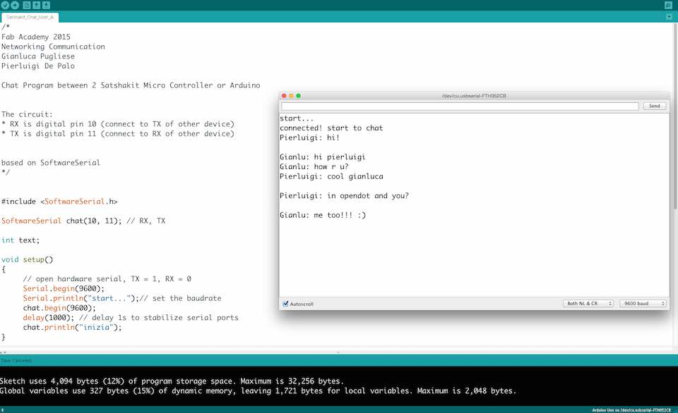

****************************************************************************************************************
ASSIGNMENT: DESIG AND BUILD A WIRED OR WIRELESS NETWORK CONNECTING AT LEAST TWO PROCESSOR
PROJECT: SATSHAKIT CHAT // CHAT PROGRAM BETWEEN 2 MICRO CONTROLLERS
INPUT:
OUTPUT:
SOFT:
DATASHEET:
TUTORIAL:
NOTE:
****************************************************************************************************************

/*
Fab Academy 2015
Networking Communication
Gianluca Pugliese
Pierluigi De Palo
Chat Program between 2 Satshakit Micro Controller or Arduino
The circuit:
* RX is digital pin 10 (connect to TX of other device)
* TX is digital pin 11 (connect to RX of other device)
based on SoftwareSerial
*/
#include
SoftwareSerial chat(10, 11); // RX, TX
int text;
void setup()
{
// open hardware serial, TX = 1, RX = 0
Serial.begin(9600);
Serial.println("start...");// set the baudrate
chat.begin(9600);
delay(1000); // delay 1s to stabilize serial ports
chat.println("inizia");
}
void loop()
{
if (chat.available())
Serial.write(chat.read());
if (Serial.available())
{
Serial.print("Pierluigi: ");
chat.write("Pierluigi: ");
while (Serial.available())
{
text = Serial.read();
chat.write(text);
Serial.write(text);
}
chat.println();
Serial.println();
}
}